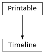

Timeline#
- class esis.nsroc.Timeline(timedelta_esis_start=None, timedelta_rail_release=None, timedelta_terrier_burnout=None, timedelta_blackbrant_ignition=None, timedelta_canard_decouple=None, timedelta_blackbrant_burnout=None, timedelta_despin=None, timedelta_payload_separation=None, timedelta_sparcs_enable=None, timedelta_shutter_open=None, timedelta_nosecone_eject=None, timedelta_sparcs_finemode=None, timedelta_sparcs_rlg_enable=None, timedelta_sparcs_rlg_disable=None, timedelta_shutter_close=None, timedelta_sparcs_spinup=None, timedelta_sparcs_vent=None, timedelta_ballistic_impact=None, timedelta_sparcs_disable=None, timedelta_parachute_deploy=None, timedelta_payload_impact=None)[source]#
Bases:
PrintableA Python representation of the NSROC timeline for the ESIS mission.
All times are relative to the start time of the mission.
Attributes
The predicted mission time of ballistic impact of the payload.
The mission time of the Black Brant second stage burnout.
The mission time of the Black Brant second stage ignition.
The mission time when the S-19 guidance system releases the canards.
The mission time when the despin sequence is initiated.
The mission time at the start of the ESIS exposure sequence.
The mission time when the nosecone is ejected from the top of the payload.
The mission time when the parachute is deployed.
The mission time when the payload impacts the Earth on its parachute.
The mission time when the payload separates from the rest of the vehicle.
The mission time when the vehicle clears the launch rail.
The mission time when the payload shutter door is closed.
The mission time when the payload shutter door is opened.
The mission time when SPARCS is powered off.
The mission time when the SPARCS pointing system is enabled.
The mission time when SPARCS is predicted to have acquired fine-pointing mode.
The mission time when the ring-laser gyroscope is disabled.
The mission time when the ring-laser gyroscope is enabled.
The mission time when SPARCS spins up the payload for re-entry.
The mission time when SPARCS vents leftover propellant.
The mission time of the Terrier first stage burnout.
Methods
__init__([timedelta_esis_start, ...])to_string([prefix])Public-facing version of the
__repr__method that allows for defining a prefix string, which can be used to calculate how much whitespace to add to the beginning of each line of the result.Inheritance Diagram
- Parameters:
timedelta_esis_start (None | Quantity)
timedelta_rail_release (None | Quantity)
timedelta_terrier_burnout (None | Quantity)
timedelta_blackbrant_ignition (None | Quantity)
timedelta_canard_decouple (None | Quantity)
timedelta_blackbrant_burnout (None | Quantity)
timedelta_despin (None | Quantity)
timedelta_payload_separation (None | Quantity)
timedelta_sparcs_enable (None | Quantity)
timedelta_shutter_open (None | Quantity)
timedelta_nosecone_eject (None | Quantity)
timedelta_sparcs_finemode (None | Quantity)
timedelta_sparcs_rlg_enable (None | Quantity)
timedelta_sparcs_rlg_disable (None | Quantity)
timedelta_shutter_close (None | Quantity)
timedelta_sparcs_spinup (None | Quantity)
timedelta_sparcs_vent (None | Quantity)
timedelta_ballistic_impact (None | Quantity)
timedelta_sparcs_disable (None | Quantity)
timedelta_parachute_deploy (None | Quantity)
timedelta_payload_impact (None | Quantity)
- to_string(prefix=None)#
Public-facing version of the
__repr__method that allows for defining a prefix string, which can be used to calculate how much whitespace to add to the beginning of each line of the result.
- timedelta_ballistic_impact: None | Quantity = None#
The predicted mission time of ballistic impact of the payload.
- timedelta_blackbrant_burnout: None | Quantity = None#
The mission time of the Black Brant second stage burnout.
- timedelta_blackbrant_ignition: None | Quantity = None#
The mission time of the Black Brant second stage ignition.
- timedelta_canard_decouple: None | Quantity = None#
The mission time when the S-19 guidance system releases the canards.
- timedelta_esis_start: None | Quantity = None#
The mission time at the start of the ESIS exposure sequence.
- timedelta_nosecone_eject: None | Quantity = None#
The mission time when the nosecone is ejected from the top of the payload.
- timedelta_parachute_deploy: None | Quantity = None#
The mission time when the parachute is deployed.
- timedelta_payload_impact: None | Quantity = None#
The mission time when the payload impacts the Earth on its parachute.
- timedelta_payload_separation: None | Quantity = None#
The mission time when the payload separates from the rest of the vehicle.
- timedelta_rail_release: None | Quantity = None#
The mission time when the vehicle clears the launch rail.
- timedelta_shutter_close: None | Quantity = None#
The mission time when the payload shutter door is closed.
- timedelta_shutter_open: None | Quantity = None#
The mission time when the payload shutter door is opened.
- timedelta_sparcs_enable: None | Quantity = None#
The mission time when the SPARCS pointing system is enabled.
- timedelta_sparcs_finemode: None | Quantity = None#
The mission time when SPARCS is predicted to have acquired fine-pointing mode.
- timedelta_sparcs_rlg_disable: None | Quantity = None#
The mission time when the ring-laser gyroscope is disabled.
- timedelta_sparcs_rlg_enable: None | Quantity = None#
The mission time when the ring-laser gyroscope is enabled.
- timedelta_sparcs_spinup: None | Quantity = None#
The mission time when SPARCS spins up the payload for re-entry.